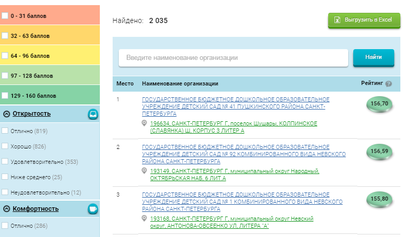
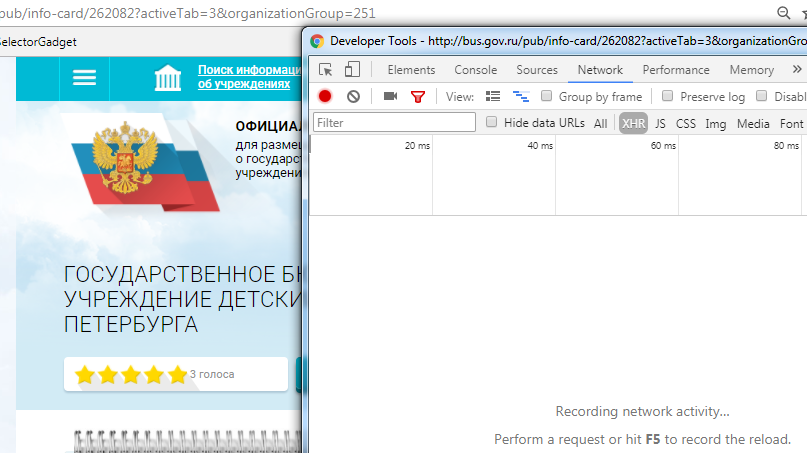
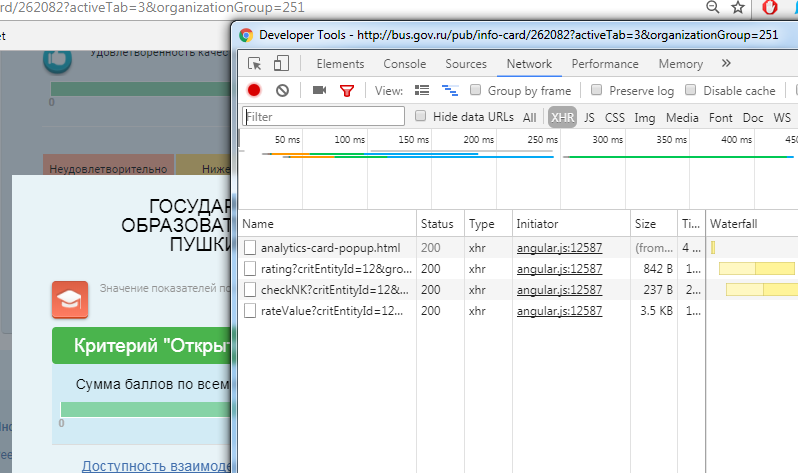
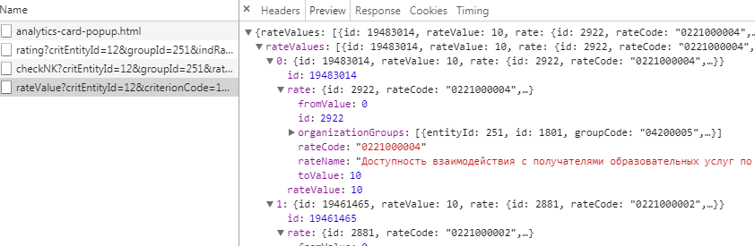

Часть 3 Heavy way: httr+jsonlite
В последние годы веб-страницы всё реже являются статичными и всё чаще используют AJAX – набор технологий для асинхронной работы с JavaScript и XML, когда мы один раз загружаем страницу в браузер и, например, выбираем какие-нибудь фильтры для отображающихся таблиц. Это удобно для пользователей, потому что не нужно каждый раз перезагружать страницу заново, и удобно для разработчиков, поскольку на сервер приходится меньше нагрузки; кроме того, это позволяет делать прикольные интерактивные штуки с тем, что происходит на странице.
Однако это создаёт проблему для людей, которые хотят соскрэпить данные с веб-страницы, то есть для нас. Страница в момент первого обращения (то есть когда мы делаем запрос с помощью функции read_html в rvest) не содержит нужных нам данных, они подгружаются чуть позже, когда выполняется скрипт JavaScript. Что же делать?
Я знаю о двух способах решения этой задачи. Первый заключается в том, чтобы найти вторичные запросы JS-скриптов, которые подгружают данные к нам на страницу, если мы сидим через браузер. Часто это непростая задача, потому что таких скриптов и обращений может быть много, и чтобы их найти нужно покопаться и найти нужное. Такой способ я покажу в этой главе, а про второй расскажу в следующей.
В качестве примера я возьму портал Федерального казначейства России, посвященный информации о государственных и муниципальных закупках – bus.gov.ru.
Пара моих знакомых занимается исследованиями образования, и они были в ужасе от того, что им придётся вручную копировать больше тысячи записей о рейтингах школ Санкт-Петербурга, которые есть на bus.gov.ru. Когда я узнал об этом, я сказал: “Фигня вопрос, это делается за вечер”. В действительности это заняло примерно в 5 раз больше времени. Про этот опыт и будет пример со скрэпингом веб-страниц с асинхронной загрузкой данных.
3.1 bus.gov.ru и задачка для выгрузки данных
Задача звучит так. Есть страница, содержащая учреждения начального и среднего образования Санкт-Петербурга (нужно выбрать кнопку “Образование”, а субъект – “Санкт-Петербург”).

При переходе на страничку детского сада №41 в Пушкинском районе (первая страница в списке) показывается много всяких интересных данных об этом детском саде. Особенно интересна маленькая незаметная кнопка “Значения показателей” внизу карточку, при нажатии на которую появляются окошко-фрейм с суммами баллов, которые, по какой-то причине, все равны 10 из 10 (это моих знакомых и заинтересовало больше всего).
Задача: как выгрузить все эти показатели для всех элементов списка в плоскую таблицу для анализа?
Правильный ответ: разобраться в открытых данных портала bus.gov.ru, скачать нужные XML и распарсить их. Пример, который будет ниже, дан в дидактических целях: про XML я узнал позднее, а создавать нагрузку на неофициальный API нехорошо.
3.2 Отлов JSON’ов
Асинхронная загрузка данных работает следующим образом. Допустим, мы открыли страницу школы, и хотим узнать её показатели. Как только нажимаем на соответствующую ссылку, страница в браузере отправляет запрос на сервер, тот в ответ присылает значения показателей. Если мы узнаем содержание запроса, то сможем отправлять его сами и, соответственно, получать нужные данные. Как это сделать?
Когда в прошлый раз мы открывали просмотрщик исходного кода, там, помимо вкладки с HTML, были и другие вкладки. Одна из них нам и нужна, она называется “Network” в Chrome. Давайте перейдём на страницу детского сада, нажмём F12 и откроем упомянутую вкладку, а уже в ней, рядом между кнопочками “All” и “JS” есть заветная кнопка “XHR”, аббревиатура XMLHttpRequest, того самого способа подгрузки данных в имеющуюся страницу с помощью JavaScript. Выглядит это всё вот так:

Теперь нажмём на ссылку загрузки показателей. И тут пошли запросы:

Изучаем каждый из четырёх заголовков и ответных наборов данных. Вот, например, ответ со значениями показателей:

Если переключиться там же на вкладку “Headers”, то мы увидим, как составить запрос, чтобы получить информацию по показателям. Только теперь не для одной школы или детского сада, а для всех нужных нам. Сам запрос выглядит примерно так (его можно даже в адресную строку браузера вставить и посмотреть, как выглядит ответный JSON):
http://bus.gov.ru/public-rating/api/analytics/rateValue?critEntityId=12&criterionCode=1&groupId=251&indRatingId=134349&isOrg=true&pgmu=true&ratingYear=2017&scopesActivity=2&sourceAgencyId=262082
Видим, что в URL передаются разные параметры. Можно поперебирать запрос так, чтобы минимизировать число этих параметров (кажется, что некоторые из них точно не нужны - например, я убрал title), при этом сохраняя ответ сервера.
3.3 httr и отправка запросов
Под капотом rvest трудится библиотечка httr. Когда мы выполняем функцию rvest::read_html("www.google.com"), там, внутри R, httr делает POST-запрос к серверу Google, получает ответ, определяет и аккуратно извлекает из него содержимое, передавая затем его библиотеке xml2 для синтаксического разбора (под чутким руководством rvest). Здесь, чтобы начать работать с заголовками, нам нужно спуститься на уровень httr и самом посоставлять запросы. Попробуем получить показатели того конкретного детского сада с помощью httr:
library(httr)
bgr_url <- 'http://bus.gov.ru/public-rating/api/analytics/rateValue?critEntityId=12&criterionCode=1&groupId=251&indRatingId=134349&isOrg=true&pgmu=true&ratingYear=2017&scopesActivity=2&sourceAgencyId=262082'
# Делаем запрос по адресу и сохраняем ответ в resp:
resp <- GET(bgr_url)
str(resp)## List of 10
## $ url : chr "http://bus.gov.ru/public-rating/api/analytics/rateValue?critEntityId=12&criterionCode=1&groupId=251&indRatingId"| __truncated__
## $ status_code: int 200
## $ headers :List of 13
## ..$ server : chr "nginx"
## ..$ date : chr "Sat, 06 Jan 2018 22:01:54 GMT"
## ..$ content-type : chr "application/json"
## ..$ transfer-encoding: chr "chunked"
## ..$ connection : chr "keep-alive"
## ..$ set-cookie : chr "gmuind=1; Domain=bus.gov.ru; Path=/"
## ..$ content-language : chr "ru-RU"
## ..$ set-cookie : chr "JSESSIONID=0000FRZ0HWO78GZmWrS58r33QQP:19t8nad37; Path=/"
## ..$ expires : chr "Thu, 01 Dec 1994 16:00:00 GMT"
## ..$ cache-control : chr "no-cache=\"set-cookie, set-cookie2\""
## ..$ loc : chr "indratbackend"
## ..$ set-cookie : chr "stick=!2NR6gjAYwz5t2lAW1/kkDaZKycN1Kd0AsBM9bMtLcBWkOyZbXi2/glq18Z7IPUkNQRGsfVYGUxQEHNE=; path=/"
## ..$ set-cookie : chr "srv=29120;"
## ..- attr(*, "class")= chr [1:2] "insensitive" "list"
## $ all_headers:List of 1
## ..$ :List of 3
## .. ..$ status : int 200
## .. ..$ version: chr "HTTP/1.1"
## .. ..$ headers:List of 13
## .. .. ..$ server : chr "nginx"
## .. .. ..$ date : chr "Sat, 06 Jan 2018 22:01:54 GMT"
## .. .. ..$ content-type : chr "application/json"
## .. .. ..$ transfer-encoding: chr "chunked"
## .. .. ..$ connection : chr "keep-alive"
## .. .. ..$ set-cookie : chr "gmuind=1; Domain=bus.gov.ru; Path=/"
## .. .. ..$ content-language : chr "ru-RU"
## .. .. ..$ set-cookie : chr "JSESSIONID=0000FRZ0HWO78GZmWrS58r33QQP:19t8nad37; Path=/"
## .. .. ..$ expires : chr "Thu, 01 Dec 1994 16:00:00 GMT"
## .. .. ..$ cache-control : chr "no-cache=\"set-cookie, set-cookie2\""
## .. .. ..$ loc : chr "indratbackend"
## .. .. ..$ set-cookie : chr "stick=!2NR6gjAYwz5t2lAW1/kkDaZKycN1Kd0AsBM9bMtLcBWkOyZbXi2/glq18Z7IPUkNQRGsfVYGUxQEHNE=; path=/"
## .. .. ..$ set-cookie : chr "srv=29120;"
## .. .. ..- attr(*, "class")= chr [1:2] "insensitive" "list"
## $ cookies :'data.frame': 4 obs. of 7 variables:
## ..$ domain : chr [1:4] ".bus.gov.ru" "bus.gov.ru" "bus.gov.ru" "bus.gov.ru"
## ..$ flag : logi [1:4] TRUE FALSE FALSE FALSE
## ..$ path : chr [1:4] "/" "/" "/" "/public-rating/api/analytics/"
## ..$ secure : logi [1:4] FALSE FALSE FALSE FALSE
## ..$ expiration: POSIXct[1:4], format: NA NA NA NA
## ..$ name : chr [1:4] "gmuind" "JSESSIONID" "stick" "srv"
## ..$ value : chr [1:4] "1" "0000FRZ0HWO78GZmWrS58r33QQP:19t8nad37" "!2NR6gjAYwz5t2lAW1/kkDaZKycN1Kd0AsBM9bMtLcBWkOyZbXi2/glq18Z7IPUkNQRGsfVYGUxQEHNE=" "29120"
## $ content : raw [1:3332] 7b 22 72 61 ...
## $ date : POSIXct[1:1], format: "2018-01-06 22:01:54"
## $ times : Named num [1:6] 0 0 0.015 0.015 0.202 0.218
## ..- attr(*, "names")= chr [1:6] "redirect" "namelookup" "connect" "pretransfer" ...
## $ request :List of 7
## ..$ method : chr "GET"
## ..$ url : chr "http://bus.gov.ru/public-rating/api/analytics/rateValue?critEntityId=12&criterionCode=1&groupId=251&indRatingId"| __truncated__
## ..$ headers : Named chr "application/json, text/xml, application/xml, */*"
## .. ..- attr(*, "names")= chr "Accept"
## ..$ fields : NULL
## ..$ options :List of 3
## .. ..$ useragent: chr "libcurl/7.53.1 r-curl/2.6 httr/1.2.1"
## .. ..$ cainfo : chr "C:/Users/Alexey/Documents/R/win-library/3.4/openssl/cacert.pem"
## .. ..$ httpget : logi TRUE
## ..$ auth_token: NULL
## ..$ output : list()
## .. ..- attr(*, "class")= chr [1:2] "write_memory" "write_function"
## ..- attr(*, "class")= chr "request"
## $ handle :Class 'curl_handle' <externalptr>
## - attr(*, "class")= chr "response"В resp у нас сохраняется куча информации о проведенном с сервером обмене. Во-первых, мы видим, что обмен произошёл успешно (resp$status_code равен 200), во-вторых, resp$headers$content_type у нас JSON. В-третьих, мы можем взять и положить этот JSON в переменную R, используя замечательную библиотеку jsonlite:
library(jsonlite)
# Попутно указываем кодировку и выбираем единственный элемент списка $rateValues
df <- fromJSON(content(resp, "text", encoding = "UTF-8"))$rateValues
str(df)## 'data.frame': 4 obs. of 3 variables:
## $ id : int 19483014 19461465 19461704 19452342
## $ rateValue: num 10 10 10 10
## $ rate :'data.frame': 4 obs. of 6 variables:
## ..$ id : int 2922 2881 2921 2923
## ..$ rateCode : chr "0221000004" "0221000002" "0221000003" "0221000005"
## ..$ rateName : chr "Доступность взаимодействия с получателями образовательных услуг по телефону, по электронной почте, с помощью эл"| __truncated__ "Полнота и актуальность информации об организации, осуществляющей образовательную деятельность (далее -организац"| __truncated__ "Наличие на официальном сайте организации в сети Интернет сведений о педагогических работниках организации" "Доступность сведений о ходе рассмотрения обращений граждан, поступивших в организацию от получателей образовате"| __truncated__
## ..$ fromValue : num 0 0 0 0
## ..$ toValue : num 10 10 10 10
## ..$ organizationGroups:List of 4
## .. ..$ :'data.frame': 1 obs. of 6 variables:
## .. .. ..$ entityId : int 251
## .. .. ..$ id : int 1801
## .. .. ..$ groupCode : chr "04200005"
## .. .. ..$ groupName : chr "организации, осуществляющие образовательную деятельность"
## .. .. ..$ isGeneral : logi TRUE
## .. .. ..$ entityStatus: chr "P"
## .. ..$ :'data.frame': 1 obs. of 6 variables:
## .. .. ..$ entityId : int 251
## .. .. ..$ id : int 1801
## .. .. ..$ groupCode : chr "04200005"
## .. .. ..$ groupName : chr "организации, осуществляющие образовательную деятельность"
## .. .. ..$ isGeneral : logi TRUE
## .. .. ..$ entityStatus: chr "P"
## .. ..$ :'data.frame': 1 obs. of 6 variables:
## .. .. ..$ entityId : int 251
## .. .. ..$ id : int 1801
## .. .. ..$ groupCode : chr "04200005"
## .. .. ..$ groupName : chr "организации, осуществляющие образовательную деятельность"
## .. .. ..$ isGeneral : logi TRUE
## .. .. ..$ entityStatus: chr "P"
## .. ..$ :'data.frame': 1 obs. of 6 variables:
## .. .. ..$ entityId : int 251
## .. .. ..$ id : int 1801
## .. .. ..$ groupCode : chr "04200005"
## .. .. ..$ groupName : chr "организации, осуществляющие образовательную деятельность"
## .. .. ..$ isGeneral : logi TRUE
## .. .. ..$ entityStatus: chr "P"Одна из главных сложностей при работе с JSON – его сложная вложенная структура. Наш JSON теперь как бы датафрейм, с 4 наблюдениями, но из трёх переменных в одной из них ($) есть, в свою очередь, вложенные датафреймы (по одному на каждое наблюдение). В таких случаях нужно детально инспектировать данные и понимать, что нужно оставить, а что можно выкинуть, чтобы сделать датафрейм плоским.
В нашем случае эта неприглядная конструкция выглядит так:
# Отбираем то, что надо
df <- as.data.frame(t(data.frame(rate_name = df$rate$rateName, rate_value = df[,c("rateValue")])), stringsAsFactors = F)
# Причесываем переменные и их названия
row.names(df) <- NULL
colnames(df) <- df[1, ]
df <- df[-1, ]
str(df)## 'data.frame': 1 obs. of 4 variables:
## $ Доступность взаимодействия с получателями образовательных услуг по телефону, по электронной почте, с помощью электронных сервисов, предоставляемых на официальном сайте организации в сети Интернет, в том числе наличие возможности внесения предложений, направленных на улучшение работы организации : chr "10"
## $ Полнота и актуальность информации об организации, осуществляющей образовательную деятельность (далее -организация), и ее деятельности, размещенной на официальном сайте организации в информационно-телекоммуникационной сети «Интернет» (далее - сеть Интернет) (для государственных (муниципальных) организаций - информации, размещенной, в том числе на официальном сайте в сети Интернет www.bus.gov.ru): chr "10"
## $ Наличие на официальном сайте организации в сети Интернет сведений о педагогических работниках организации : chr "10"
## $ Доступность сведений о ходе рассмотрения обращений граждан, поступивших в организацию от получателей образовательных услуг (по телефону, по электронной почте, с помощью электронных сервисов, доступных на официальном сайте организации) : chr "10"В реальности на каждую школу и детсад необходимо было отправлять 6 запросов, но общий принцип тот же. Для того, чтобы это стало настоящим скрэпером, нужно получить список образовательных учреждений, облачить запрос в функцию и запустить цикл.
3.4 Цикл с запросами
Попробуем теперь получить значения показателей для первых 20 школ и детсадов из списка. Для этого сначала получим сам список этих школ и детсадов тем же методом – отправкой запроса и получением JSON.
URL для списка имеет такой вид: http://bus.gov.ru/public-rating/api/topOrganizations/tableData?groupId=251&groupIdStr=%D0%BE%D1%80%D0%B3%D0%B0%D0%BD%D0%B8%D0%B7%D0%B0%D1%86%D0%B8%D0%B8,+%D0%BE%D1%81%D1%83%D1%89%D0%B5%D1%81%D1%82%D0%B2%D0%BB%D1%8F%D1%8E%D1%89%D0%B8%D0%B5+%D0%BE%D0%B1%D1%80%D0%B0%D0%B7%D0%BE%D0%B2%D0%B0%D1%82%D0%B5%D0%BB%D1%8C%D0%BD%D1%83%D1%8E+%D0%B4%D0%B5%D1%8F%D1%82%D0%B5%D0%BB%D1%8C%D0%BD%D0%BE%D1%81%D1%82%D1%8C&orgName=&page=1&pageSize=10&ppoId=21499&ppoIdStr=%D0%A1%D0%B0%D0%BD%D0%BA%D1%82-%D0%9F%D0%B5%D1%82%D0%B5%D1%80%D0%B1%D1%83%D1%80%D0%B3&scopeActivity=2
В ней для нас важен параметр page – это страница из всего списка организаций, объём которой составляет 10 организаций. Создадим функцию, которая будет подхватывать список из 10 организаций, но каждый раз новых. Для этого подменим номер страницы переменной page_number, по которой будем проходить циклом. В GET-запрос добавим куки, которые будут автоматически ставить географию – Санкт-Петербург. Из полученного JSON формируем датафрейм с названиями, адресами и идентификаторами организаций:
bus.gov.ru_get_schools_list <- function(page_number) {
path <- paste0(
"http://bus.gov.ru/public-rating/api/topOrganizations/tableData?groupId=251&groupIdStr=%D0%BE%D1%80%D0%B3%D0%B0%D0%BD%D0%B8%D0%B7%D0%B0%D1%86%D0%B8%D0%B8,+%D0%BE%D1%81%D1%83%D1%89%D0%B5%D1%81%D1%82%D0%B2%D0%BB%D1%8F%D1%8E%D1%89%D0%B8%D0%B5+%D0%BE%D0%B1%D1%80%D0%B0%D0%B7%D0%BE%D0%B2%D0%B0%D1%82%D0%B5%D0%BB%D1%8C%D0%BD%D1%83%D1%8E+%D0%B4%D0%B5%D1%8F%D1%82%D0%B5%D0%BB%D1%8C%D0%BD%D0%BE%D1%81%D1%82%D1%8C&orgName=&page=",
page_number,
"&pageSize=10&ppoId=21499&ppoIdStr=%D0%A1%D0%B0%D0%BD%D0%BA%D1%82-%D0%9F%D0%B5%D1%82%D0%B5%D1%80%D0%B1%D1%83%D1%80%D0%B3&scopeActivity=2")
# set cookies for region subsetting
resp <- GET(path, set_cookies(
homeRegionId = "5277347",
homeRegionFullName="%D0%A1%D0%B0%D0%BD%D0%BA%D1%82-%D0%9F%D0%B5%D1%82%D0%B5%D1%80%D0%B1%D1%83%D1%80%D0%B3",
homeRegionName="%D0%A1%D0%B0%D0%BD%D0%BA%D1%82-%D0%9F%D0%B5%D1%82%D0%B5%D1%80%D0%B1%D1%83%D1%80%D0%B3"))
data <- fromJSON(content(resp, "text"))$records
return(data.frame(id = data$organization$sourceAgency$id, name = data$organization$fullName, address = data$organization$address$fullAddress))
}
df <- bus.gov.ru_get_schools_list(1)## No encoding supplied: defaulting to UTF-8.df## id name address
## 1 262082 ГОСУДАРСТВЕННОЕ БЮДЖЕТНОЕ ДОШКОЛЬНОЕ ОБРАЗОВАТЕЛЬНОЕ УЧРЕЖДЕНИЕ ДЕТСКИЙ САД № 41 ПУШКИНСКОГО РАЙОНА САНКТ-ПЕТЕРБУРГА 196634, САНКТ-ПЕТЕРБУРГ Г, поселок Шушары, КОЛПИНСКОЕ (СЛАВЯНКА) Ш, КОРПУС 3 ЛИТЕР А
## 2 140730 ГОСУДАРСТВЕННОЕ БЮДЖЕТНОЕ ДОШКОЛЬНОЕ ОБРАЗОВАТЕЛЬНОЕ УЧРЕЖДЕНИЕ ДЕТСКИЙ САД № 92 КОМБИНИРОВАННОГО ВИДА НЕВСКОГО РАЙОНА САНКТ-ПЕТЕРБУРГА 193149, САНКТ-ПЕТЕРБУРГ Г, муниципальный округ Народный, ОКТЯБРЬСКАЯ НАБ, 6 ЛИТ.А
## 3 203305 ГОСУДАРСТВЕННОЕ БЮДЖЕТНОЕ ДОШКОЛЬНОЕ ОБРАЗОВАТЕЛЬНОЕ УЧРЕЖДЕНИЕ ДЕТСКИЙ САД № 1 КОМБИНИРОВАННОГО ВИДА НЕВСКОГО РАЙОНА САНКТ-ПЕТЕРБУРГА 193168, САНКТ-ПЕТЕРБУРГ Г, муниципальный округ Невский округ, АНТОНОВА-ОВСЕЕНКО УЛ, ЛИТЕРА "А"
## 4 172687 ГОСУДАРСТВЕННОЕ БЮДЖЕТНОЕ УЧРЕЖДЕНИЕ ДОПОЛНИТЕЛЬНОГО ОБРАЗОВАНИЯ ДВОРЕЦ ДЕТСКОГО (ЮНОШЕСКОГО) ТВОРЧЕСТВА КИРОВСКОГО РАЙОНА САНКТ-ПЕТЕРБУРГА 198216, САНКТ-ПЕТЕРБУРГ Г, муниципальный округ Княжево, ЛЕНИНСКИЙ ПР-КТ, КОРПУС 4. ЛИТ. А
## 5 170494 ГОСУДАРСТВЕННОЕ БЮДЖЕТНОЕ ДОШКОЛЬНОЕ ОБРАЗОВАТЕЛЬНОЕ УЧРЕЖДЕНИЕ ДЕТСКИЙ САД № 57 КОМБИНИРОВАННОГО ВИДА ПРИМОРСКОГО РАЙОНА САНКТ-ПЕТЕРБУРГА 197371, САНКТ-ПЕТЕРБУРГ Г, муниципальный округ Юнтолово, КОРОЛЕВА ПР-КТ, 2, ЛИТ.А
## 6 158997 САНКТ-ПЕТЕРБУРГСКОЕ ГОСУДАРСТВЕННОЕ БЮДЖЕТНОЕ ОБРАЗОВАТЕЛЬНОЕ УЧРЕЖДЕНИЕ ДОПОЛНИТЕЛЬНОГО ОБРАЗОВАНИЯ ДЕТЕЙ СПЕЦИАЛИЗИРОВАННАЯ ДЕТСКО-ЮНОШЕСКАЯ СПОРТИВНАЯ ШКОЛА ОЛИМПИЙСКОГО РЕЗЕРВА № 1 ФРУНЗЕНСКОГО РАЙОНА 192007, САНКТ-ПЕТЕРБУРГ Г, муниципальный округ Волковское, ЛИГОВСКИЙ ПР-КТ, ЛИТ.А
## 7 231657 ГОСУДАРСТВЕННОЕ БЮДЖЕТНОЕ ДОШКОЛЬНОЕ ОБРАЗОВАТЕЛЬНОЕ УЧРЕЖДЕНИЕ ДЕТСКИЙ САД "КУДЕСНИЦА" КОМПЕНСИРУЮЩЕГО ВИДА ПЕТРОГРАДСКОГО РАЙОНА САНКТ-ПЕТЕРБУРГА 197022, САНКТ-ПЕТЕРБУРГ Г, муниципальный округ Чкаловское, 1-Я БЕРЕЗОВАЯ АЛ, ЛИТ А
## 8 175965 ГОСУДАРСТВЕННОЕ БЮДЖЕТНОЕ ДОШКОЛЬНОЕ ОБРАЗОВАТЕЛЬНОЕ УЧРЕЖДЕНИЕ ДЕТСКИЙ САД № 116 КОМБИНИРОВАННОГО ВИДА НЕВСКОГО РАЙОНА САНКТ-ПЕТЕРБУРГА 193230, САНКТ-ПЕТЕРБУРГ Г, муниципальный округ № 54, ИСКРОВСКИЙ ПР-КТ, 2 ЛИТ. А
## 9 206464 ГОСУДАРСТВЕННОЕ БЮДЖЕТНОЕ ДОШКОЛЬНОЕ ОБРАЗОВАТЕЛЬНОЕ УЧРЕЖДЕНИЕ ДЕТСКИЙ САД № 29 КОМБИНИРОВАННОГО ВИДА ЦЕНТРАЛЬНОГО РАЙОНА САНКТ-ПЕТЕРБУРГА 191167, САНКТ-ПЕТЕРБУРГ Г, муниципальный округ Смольнинское, НЕВСКИЙ ПР-КТ, ЛИТЕР А, П.1-Н,2-Н,3-Н,4-Н,5-Н,9-Н,Л3,Л4,Л5
## 10 181165 ГОСУДАРСТВЕННОЕ БЮДЖЕТНОЕ ДОШКОЛЬНОЕ ОБРАЗОВАТЕЛЬНОЕ УЧРЕЖДЕНИЕ ДЕТСКИЙ САД № 94 КОМПЕНСИРУЮЩЕГО ВИДА НЕВСКОГО РАЙОНА САНКТ-ПЕТЕРБУРГА 193168, САНКТ-ПЕТЕРБУРГ Г, муниципальный округ Невский округ, ДЫБЕНКО УЛ, КОРПУС 2, ЛИТЕРА АТеперь можно сделать цикл и применять функцию для каждой новой страницы:
for (i in 2:4) {
print(i)
df <- rbind(df, bus.gov.ru_get_schools_list(i))
Sys.sleep(1)
}## [1] 2## No encoding supplied: defaulting to UTF-8.## [1] 3## No encoding supplied: defaulting to UTF-8.## [1] 4## No encoding supplied: defaulting to UTF-8.df## id name address
## 1 262082 ГОСУДАРСТВЕННОЕ БЮДЖЕТНОЕ ДОШКОЛЬНОЕ ОБРАЗОВАТЕЛЬНОЕ УЧРЕЖДЕНИЕ ДЕТСКИЙ САД № 41 ПУШКИНСКОГО РАЙОНА САНКТ-ПЕТЕРБУРГА 196634, САНКТ-ПЕТЕРБУРГ Г, поселок Шушары, КОЛПИНСКОЕ (СЛАВЯНКА) Ш, КОРПУС 3 ЛИТЕР А
## 2 140730 ГОСУДАРСТВЕННОЕ БЮДЖЕТНОЕ ДОШКОЛЬНОЕ ОБРАЗОВАТЕЛЬНОЕ УЧРЕЖДЕНИЕ ДЕТСКИЙ САД № 92 КОМБИНИРОВАННОГО ВИДА НЕВСКОГО РАЙОНА САНКТ-ПЕТЕРБУРГА 193149, САНКТ-ПЕТЕРБУРГ Г, муниципальный округ Народный, ОКТЯБРЬСКАЯ НАБ, 6 ЛИТ.А
## 3 203305 ГОСУДАРСТВЕННОЕ БЮДЖЕТНОЕ ДОШКОЛЬНОЕ ОБРАЗОВАТЕЛЬНОЕ УЧРЕЖДЕНИЕ ДЕТСКИЙ САД № 1 КОМБИНИРОВАННОГО ВИДА НЕВСКОГО РАЙОНА САНКТ-ПЕТЕРБУРГА 193168, САНКТ-ПЕТЕРБУРГ Г, муниципальный округ Невский округ, АНТОНОВА-ОВСЕЕНКО УЛ, ЛИТЕРА "А"
## 4 172687 ГОСУДАРСТВЕННОЕ БЮДЖЕТНОЕ УЧРЕЖДЕНИЕ ДОПОЛНИТЕЛЬНОГО ОБРАЗОВАНИЯ ДВОРЕЦ ДЕТСКОГО (ЮНОШЕСКОГО) ТВОРЧЕСТВА КИРОВСКОГО РАЙОНА САНКТ-ПЕТЕРБУРГА 198216, САНКТ-ПЕТЕРБУРГ Г, муниципальный округ Княжево, ЛЕНИНСКИЙ ПР-КТ, КОРПУС 4. ЛИТ. А
## 5 170494 ГОСУДАРСТВЕННОЕ БЮДЖЕТНОЕ ДОШКОЛЬНОЕ ОБРАЗОВАТЕЛЬНОЕ УЧРЕЖДЕНИЕ ДЕТСКИЙ САД № 57 КОМБИНИРОВАННОГО ВИДА ПРИМОРСКОГО РАЙОНА САНКТ-ПЕТЕРБУРГА 197371, САНКТ-ПЕТЕРБУРГ Г, муниципальный округ Юнтолово, КОРОЛЕВА ПР-КТ, 2, ЛИТ.А
## 6 158997 САНКТ-ПЕТЕРБУРГСКОЕ ГОСУДАРСТВЕННОЕ БЮДЖЕТНОЕ ОБРАЗОВАТЕЛЬНОЕ УЧРЕЖДЕНИЕ ДОПОЛНИТЕЛЬНОГО ОБРАЗОВАНИЯ ДЕТЕЙ СПЕЦИАЛИЗИРОВАННАЯ ДЕТСКО-ЮНОШЕСКАЯ СПОРТИВНАЯ ШКОЛА ОЛИМПИЙСКОГО РЕЗЕРВА № 1 ФРУНЗЕНСКОГО РАЙОНА 192007, САНКТ-ПЕТЕРБУРГ Г, муниципальный округ Волковское, ЛИГОВСКИЙ ПР-КТ, ЛИТ.А
## 7 231657 ГОСУДАРСТВЕННОЕ БЮДЖЕТНОЕ ДОШКОЛЬНОЕ ОБРАЗОВАТЕЛЬНОЕ УЧРЕЖДЕНИЕ ДЕТСКИЙ САД "КУДЕСНИЦА" КОМПЕНСИРУЮЩЕГО ВИДА ПЕТРОГРАДСКОГО РАЙОНА САНКТ-ПЕТЕРБУРГА 197022, САНКТ-ПЕТЕРБУРГ Г, муниципальный округ Чкаловское, 1-Я БЕРЕЗОВАЯ АЛ, ЛИТ А
## 8 175965 ГОСУДАРСТВЕННОЕ БЮДЖЕТНОЕ ДОШКОЛЬНОЕ ОБРАЗОВАТЕЛЬНОЕ УЧРЕЖДЕНИЕ ДЕТСКИЙ САД № 116 КОМБИНИРОВАННОГО ВИДА НЕВСКОГО РАЙОНА САНКТ-ПЕТЕРБУРГА 193230, САНКТ-ПЕТЕРБУРГ Г, муниципальный округ № 54, ИСКРОВСКИЙ ПР-КТ, 2 ЛИТ. А
## 9 206464 ГОСУДАРСТВЕННОЕ БЮДЖЕТНОЕ ДОШКОЛЬНОЕ ОБРАЗОВАТЕЛЬНОЕ УЧРЕЖДЕНИЕ ДЕТСКИЙ САД № 29 КОМБИНИРОВАННОГО ВИДА ЦЕНТРАЛЬНОГО РАЙОНА САНКТ-ПЕТЕРБУРГА 191167, САНКТ-ПЕТЕРБУРГ Г, муниципальный округ Смольнинское, НЕВСКИЙ ПР-КТ, ЛИТЕР А, П.1-Н,2-Н,3-Н,4-Н,5-Н,9-Н,Л3,Л4,Л5
## 10 181165 ГОСУДАРСТВЕННОЕ БЮДЖЕТНОЕ ДОШКОЛЬНОЕ ОБРАЗОВАТЕЛЬНОЕ УЧРЕЖДЕНИЕ ДЕТСКИЙ САД № 94 КОМПЕНСИРУЮЩЕГО ВИДА НЕВСКОГО РАЙОНА САНКТ-ПЕТЕРБУРГА 193168, САНКТ-ПЕТЕРБУРГ Г, муниципальный округ Невский округ, ДЫБЕНКО УЛ, КОРПУС 2, ЛИТЕРА А
## 11 188153 ГОСУДАРСТВЕННОЕ БЮДЖЕТНОЕ ДОШКОЛЬНОЕ ОБРАЗОВАТЕЛЬНОЕ УЧРЕЖДЕНИЕ ДЕТСКИЙ САД № 15 ПЕТРОДВОРЦОВОГО РАЙОНА САНКТ-ПЕТЕРБУРГА 198510, САНКТ-ПЕТЕРБУРГ Г, ПЕТЕРГОФ Г, город Петергоф, СУВОРОВСКИЙ ГОРОДОК, ЛИТ. А
## 12 277057 ГОСУДАРСТВЕННОЕ БЮДЖЕТНОЕ ДОШКОЛЬНОЕ ОБРАЗОВАТЕЛЬНОЕ УЧРЕЖДЕНИЕ ДЕТСКИЙ САД № 35 НЕВСКОГО РАЙОНА САНКТ-ПЕТЕРБУРГА 193318, САНКТ-ПЕТЕРБУРГ Г, муниципальный округ Правобережный, КОЛЛОНТАЙ УЛ, КОРПУС 2
## 13 218892 ГОСУДАРСТВЕННОЕ БЮДЖЕТНОЕ ДОШКОЛЬНОЕ ОБРАЗОВАТЕЛЬНОЕ УЧРЕЖДЕНИЕ ДЕТСКИЙ САД №16 ПУШКИНСКОГО РАЙОНА САНКТ-ПЕТЕРБУРГА 196608, САНКТ-ПЕТЕРБУРГ Г, ПУШКИН Г, город Пушкин, АХМАТОВСКАЯ УЛ, ЛИТ.А
## 14 178643 ГОСУДАРСТВЕННОЕ БЮДЖЕТНОЕ ДОШКОЛЬНОЕ ОБРАЗОВАТЕЛЬНОЕ УЧРЕЖДЕНИЕ ДЕТСКИЙ САД № 57 КОМБИНИРОВАННОГО ВИДА КИРОВСКОГО РАЙОНА САНКТ-ПЕТЕРБУРГА 198303, САНКТ-ПЕТЕРБУРГ Г, муниципальный округ Красненькая речка, СТАЧЕК ПР-КТ, 3 ЛИТЕР А
## 15 188838 ГОСУДАРСТВЕННОЕ БЮДЖЕТНОЕ ДОШКОЛЬНОЕ ОБРАЗОВАТЕЛЬНОЕ УЧРЕЖДЕНИЕ ДЕТСКИЙ САД № 91 КОМБИНИРОВАННОГО ВИДА ВЫБОРГСКОГО РАЙОНА САНКТ-ПЕТЕРБУРГА 194291, САНКТ-ПЕТЕРБУРГ Г, муниципальный округ № 15, ПОЭТИЧЕСКИЙ Б-Р, 1, ЛИТ.А
## 16 223210 ГОСУДАРСТВЕННОЕ БЮДЖЕТНОЕ ДОШКОЛЬНОЕ ОБРАЗОВАТЕЛЬНОЕ УЧРЕЖДЕНИЕ ДЕТСКИЙ САД № 12 КОМБИНИРОВАННОГО ВИДА ПУШКИНСКОГО РАЙОНА САНКТ-ПЕТЕРБУРГА 196631, САНКТ-ПЕТЕРБУРГ Г, поселок Александровская, ВОЛХОНСКОЕ Ш, ЛИТЕР А
## 17 173098 САНКТ-ПЕТЕРБУРГСКОЕ ГОСУДАРСТВЕННОЕ БЮДЖЕТНОЕ ОБРАЗОВАТЕЛЬНОЕ УЧРЕЖДЕНИЕ ДОПОЛНИТЕЛЬНОГО ОБРАЗОВАНИЯ ДЕТЕЙ СПЕЦИАЛИЗИРОВАННАЯ ДЕТСКО-ЮНОШЕСКАЯ СПОРТИВНАЯ ШКОЛА ОЛИМПИЙСКОГО РЕЗЕРВА КУРОРТНОГО РАЙОНА САНКТ-ПЕТЕРБУРГА ИМ. ВЛАДИМИРА КОРЕНЬКОВА 197701, САНКТ-ПЕТЕРБУРГ Г, СЕСТРОРЕЦК Г, город Сестрорецк, КРАСНЫХ КОМАНДИРОВ ПР-КТ, 9
## 18 151605 ГОСУДАРСТВЕННОЕ БЮДЖЕТНОЕ ДОШКОЛЬНОЕ ОБРАЗОВАТЕЛЬНОЕ УЧРЕЖДЕНИЕ ДЕТСКИЙ САД № 50 КОМБИНИРОВАННОГО ВИДА КИРОВСКОГО РАЙОНА САНКТ-ПЕТЕРБУРГА 198260, САНКТ-ПЕТЕРБУРГ Г, муниципальный округ Ульянка, НАРОДНОГО ОПОЛЧЕНИЯ ПР-КТ, 2, ЛИТЕРА А
## 19 208639 ГОСУДАРСТВЕННОЕ БЮДЖЕТНОЕ ДОШКОЛЬНОЕ ОБРАЗОВАТЕЛЬНОЕ УЧРЕЖДЕНИЕ ДЕТСКИЙ САД № 17 КОМБИНИРОВАННОГО ВИДА КОЛПИНСКОГО РАЙОНА САНКТ-ПЕТЕРБУРГА 196655, САНКТ-ПЕТЕРБУРГ Г, КОЛПИНО Г, город Колпино, ТВЕРСКАЯ УЛ, 2, ЛИТА
## 20 229516 ГОСУДАРСТВЕННОЕ БЮДЖЕТНОЕ ДОШКОЛЬНОЕ ОБРАЗОВАТЕЛЬНОЕ УЧРЕЖДЕНИЕ ДЕТСКИЙ САД № 5 КОМБИНИРОВАННОГО ВИДА НЕВСКОГО РАЙОНА САНКТ-ПЕТЕРБУРГА 193232, САНКТ-ПЕТЕРБУРГ Г, муниципальный округ № 54, БОЛЬШЕВИКОВ ПР-КТ, КОРПУС 2, ЛИТЕР А
## 21 161040 ГОСУДАРСТВЕННОЕ БЮДЖЕТНОЕ ДОШКОЛЬНОЕ ОБРАЗОВАТЕЛЬНОЕ УЧРЕЖДЕНИЕ ДЕТСКИЙ САД № 10 КОМПЕНСИРУЮЩЕГО ВИДА НЕВСКОГО РАЙОНА САНКТ-ПЕТЕРБУРГА 192029, САНКТ-ПЕТЕРБУРГ Г, муниципальный округ Невская застава, ЕЛИЗАРОВА ПР-КТ, 2, ЛИТЕР А
## 22 213194 ГОСУДАРСТВЕННОЕ БЮДЖЕТНОЕ ДОШКОЛЬНОЕ ОБРАЗОВАТЕЛЬНОЕ УЧРЕЖДЕНИЕ ДЕТСКИЙ САД №101 КОМПЕНСИРУЮЩЕГО ВИДА ФРУНЗЕНСКОГО РАЙОНА САНКТ-ПЕТЕРБУРГА 192281, САНКТ-ПЕТЕРБУРГ Г, муниципальный округ Георгиевский, КУПЧИНСКАЯ УЛ, 3, ЛИТЕР А
## 23 217263 ГОСУДАРСТВЕННОЕ БЮДЖЕТНОЕ ДОШКОЛЬНОЕ ОБРАЗОВАТЕЛЬНОЕ УЧРЕЖДЕНИЕ ДЕТСКИЙ САД № 41 КОМБИНИРОВАННОГО ВИДА ЦЕНТРАЛЬНОГО РАЙОНА САНКТ-ПЕТЕРБУРГА "ЦЕНТР ИНТЕГРАТИВНОГО ВОСПИТАНИЯ" 191028, САНКТ-ПЕТЕРБУРГ Г, муниципальный округ Литейный округ, ФУРШТАТСКАЯ УЛ, ЛИТ.А
## 24 176208 САНКТ-ПЕТЕРБУРГСКОЕ ГОСУДАРСТВЕННОЕ БЮДЖЕТНОЕ ОБРАЗОВАТЕЛЬНОЕ УЧРЕЖДЕНИЕ ДОПОЛНИТЕЛЬНОГО ОБРАЗОВАНИЯ ДЕТЕЙ СПЕЦИАЛИЗИРОВАННАЯ ДЕТСКО-ЮНОШЕСКАЯ СПОРТИВНАЯ ШКОЛА ОЛИМПИЙСКОГО РЕЗЕРВА "ШКОЛА ВЫСШЕГО СПОРТИВНОГО МАСТЕРСТВА ПО ВОДНЫМ ВИДАМ СПОРТА" 197022, САНКТ-ПЕТЕРБУРГ Г, муниципальный округ Аптекарский остров, РЕКИ КАРПОВКИ НАБ, 19
## 25 186557 ГОСУДАРСТВЕННОЕ БЮДЖЕТНОЕ ДОШКОЛЬНОЕ ОБРАЗОВАТЕЛЬНОЕ УЧРЕЖДЕНИЕ ДЕТСКИЙ САД № 62 ПРИМОРСКОГО РАЙОНА САНКТ-ПЕТЕРБУРГА 197227, САНКТ-ПЕТЕРБУРГ Г, муниципальный округ Озеро Долгое, ГАККЕЛЕВСКАЯ УЛ, 2 ЛИТЕРА А
## 26 194106 ГОСУДАРСТВЕННОЕ БЮДЖЕТНОЕ ДОШКОЛЬНОЕ ОБРАЗОВАТЕЛЬНОЕ УЧРЕЖДЕНИЕ ДЕТСКИЙ САД № 10 ПРИСМОТРА И ОЗДОРОВЛЕНИЯ МОСКОВСКОГО РАЙОНА САНКТ-ПЕТЕРБУРГА "БОГАТЫРЬ" 196191, САНКТ-ПЕТЕРБУРГ Г, муниципальный округ Новоизмайловское, ЛЕНИНСКИЙ ПР-КТ, 3, ЛИТ.А
## 27 203018 ГОСУДАРСТВЕННОЕ БЮДЖЕТНОЕ ДОШКОЛЬНОЕ ОБРАЗОВАТЕЛЬНОЕ УЧРЕЖДЕНИЕ ДЕТСКИЙ САД № 121 КОМБИНИРОВАННОГО ВИДА ВЫБОРГСКОГО РАЙОНА САНКТ-ПЕТЕРБУРГА 194355, САНКТ-ПЕТЕРБУРГ Г, муниципальный округ Шувалово-Озерки, ЖЕНИ ЕГОРОВОЙ УЛ, КОРПУС 2 ЛИТЕРА А
## 28 135951 ГОСУДАРСТВЕННОЕ БЮДЖЕТНОЕ ОБЩЕОБРАЗОВАТЕЛЬНОЕ УЧРЕЖДЕНИЕ ГИМНАЗИЯ № 61 ВЫБОРГСКОГО РАЙОНА САНКТ-ПЕТЕРБУРГА 194295, САНКТ-ПЕТЕРБУРГ Г, муниципальный округ № 15, ХУДОЖНИКОВ ПР-КТ, 3, ЛИТЕР А
## 29 186212 ГОСУДАРСТВЕННОЕ БЮДЖЕТНОЕ ДОШКОЛЬНОЕ ОБРАЗОВАТЕЛЬНОЕ УЧРЕЖДЕНИЕ ДЕТСКИЙ САД № 5 КОМБИНИРОВАННОГО ВИДА КАЛИНИНСКОГО РАЙОНА САНКТ-ПЕТЕРБУРГА 195256, САНКТ-ПЕТЕРБУРГ Г, муниципальный округ Гражданка, НАУКИ ПР-КТ, 2 ЛИТ.А
## 30 217989 ГОСУДАРСТВЕННОЕ БЮДЖЕТНОЕ ДОШКОЛЬНОЕ ОБРАЗОВАТЕЛЬНОЕ УЧРЕЖДЕНИЕ ДЕТСКИЙ САД № 64 КОМБИНИРОВАННОГО ВИДА КРАСНОСЕЛЬСКОГО РАЙОНА САНКТ-ПЕТЕРБУРГА 198330, САНКТ-ПЕТЕРБУРГ Г, муниципальный округ Юго-Запад, ЛЕНИНСКИЙ ПР-КТ, 3 ЛИТЕР А
## 31 217922 ГОСУДАРСТВЕННОЕ БЮДЖЕТНОЕ ДОШКОЛЬНОЕ ОБРАЗОВАТЕЛЬНОЕ УЧРЕЖДЕНИЕ ДЕТСКИЙ САД № 1 ПУШКИНСКОГО РАЙОНА САНКТ-ПЕТЕРБУРГА 196602, САНКТ-ПЕТЕРБУРГ Г, ПУШКИН Г, город Пушкин, ПАРКОВАЯ УЛ, ЛИТ.А
## 32 233885 ГОСУДАРСТВЕННОЕ БЮДЖЕТНОЕ ДОШКОЛЬНОЕ ОБРАЗОВАТЕЛЬНОЕ УЧРЕЖДЕНИЕ ДЕТСКИЙ САД № 52 КОМПЕНСИРУЮЩЕГО ВИДА КАЛИНИНСКОГО РАЙОНА САНКТ-ПЕТЕРБУРГА 195299, САНКТ-ПЕТЕРБУРГ Г, муниципальный округ № 21, ГРАЖДАНСКИЙ ПР-КТ, 4 ЛИТЕР А
## 33 190231 САНКТ-ПЕТЕРБУРГСКОЕ ГОСУДАРСТВЕННОЕ БЮДЖЕТНОЕ ОБРАЗОВАТЕЛЬНОЕ УЧРЕЖДЕНИЕ ДОПОЛНИТЕЛЬНОГО ОБРАЗОВАНИЯ ДЕТЕЙ "СПЕЦИАЛИЗИРОВАННАЯ ДЕТСКО-ЮНОШЕСКАЯ ШКОЛА ОЛИМПИЙСКОГО РЕЗЕРВА "ЦЕНТР ХУДОЖЕСТВЕННОЙ ГИМНАСТИКИ "ЖЕМЧУЖИНА" 197110, САНКТ-ПЕТЕРБУРГ Г, муниципальный округ округ Петровский, ПЕТРОВСКИЙ ПР-КТ, ЛИТЕР А
## 34 138755 ГОСУДАРСТВЕННОЕ БЮДЖЕТНОЕ ДОШКОЛЬНОЕ ОБРАЗОВАТЕЛЬНОЕ УЧРЕЖДЕНИЕ ДЕТСКИЙ САД № 113 КОМБИНИРОВАННОГО ВИДА ВЫБОРГСКОГО РАЙОНА САНКТ-ПЕТЕРБУРГА 194362, САНКТ-ПЕТЕРБУРГ Г, поселок Парголово, ВЫБОРГСКОЕ Ш, 4, ЛИТЕР А
## 35 156888 ГОСУДАРСТВЕННОЕ БЮДЖЕТНОЕ НЕТИПОВОЕ ОБРАЗОВАТЕЛЬНОЕ УЧРЕЖДЕНИЕ "САНКТ-ПЕТЕРБУРГСКИЙ ГОРОДСКОЙ ДВОРЕЦ ТВОРЧЕСТВА ЮНЫХ" 191023, САНКТ-ПЕТЕРБУРГ Г, муниципальный округ № 78, НЕВСКИЙ ПР-КТ, ЛИТЕР А
## 36 173431 ГОСУДАРСТВЕННОЕ БЮДЖЕТНОЕ ОБЩЕОБРАЗОВАТЕЛЬНОЕ УЧРЕЖДЕНИЕ ГИМНАЗИЯ №116 ПРИМОРСКОГО РАЙОНА САНКТ-ПЕТЕРБУРГА 197342, САНКТ-ПЕТЕРБУРГ Г, муниципальный округ Черная речка, НОВОСИБИРСКАЯ УЛ, 2 ЛИТ.А, 16
## 37 187637 ГОСУДАРСТВЕННОЕ БЮДЖЕТНОЕ УЧРЕЖДЕНИЕ ДОПОЛНИТЕЛЬНОГО ОБРАЗОВАНИЯ ЦЕНТР ЭСТЕТИЧЕСКОГО ВОСПИТАНИЯ ДЕТЕЙ И МОЛОДЕЖИ КАЛИНИНСКОГО РАЙОНА САНКТ-ПЕТЕРБУРГА "ЦЕНТР НА БРЯНЦЕВА" 195297, САНКТ-ПЕТЕРБУРГ Г, муниципальный округ Прометей, БРЯНЦЕВА УЛ, ЛИТ.А
## 38 136122 ГОСУДАРСТВЕННОЕ БЮДЖЕТНОЕ ДОШКОЛЬНОЕ ОБРАЗОВАТЕЛЬНОЕ УЧРЕЖДЕНИЕ ДЕТСКИЙ САД № 8 ПУШКИНСКОГО РАЙОНА САНКТ-ПЕТЕРБУРГА 196602, САНКТ-ПЕТЕРБУРГ Г, ПУШКИН Г, город Пушкин, ГУСАРСКАЯ УЛ, КОРПУС 11, ЛИТЕР А
## 39 188681 ГОСУДАРСТВЕННОЕ БЮДЖЕТНОЕ ДОШКОЛЬНОЕ ОБРАЗОВАТЕЛЬНОЕ УЧРЕЖДЕНИЕ ДЕТСКИЙ САД № 6 КОМБИНИРОВАННОГО ВИДА ВАСИЛЕОСТРОВСКОГО РАЙОНА САНКТ-ПЕТЕРБУРГА 199034, САНКТ-ПЕТЕРБУРГ Г, муниципальный округ № 7, 8-Я В.О. ЛИНИЯ, ЛИТЕР А
## 40 189231 ГОСУДАРСТВЕННОЕ БЮДЖЕТНОЕ ДОШКОЛЬНОЕ ОБРАЗОВАТЕЛЬНОЕ УЧРЕЖДЕНИЕ ДЕТСКИЙ САД ОБЩЕРАЗВИВАЮЩЕГО ВИДА № 104 С ПРИОРИТЕТНЫМ ОСУЩЕСТВЛЕНИЕМ ДЕЯТЕЛЬНОСТИ ПО ФИЗИЧЕСКОМУ РАЗВИТИЮ ДЕТЕЙ АДМИРАЛТЕЙСКОГО РАЙОНА САНКТ-ПЕТЕРБУРГА 190005, САНКТ-ПЕТЕРБУРГ Г, муниципальный округ Измайловское, ИЗМАЙЛОВСКИЙ ПР-КТ, ЛИТЕР А, ПОМЕЩЕНИЕ 1Н, 3НВуаля, у нас есть список из первых 40 организаций. Теперь достаточно сделать еще один цикл, который для каждой организации будет делать запрос, форматировать ответ и добавлять его в имеющийся датафрейм.